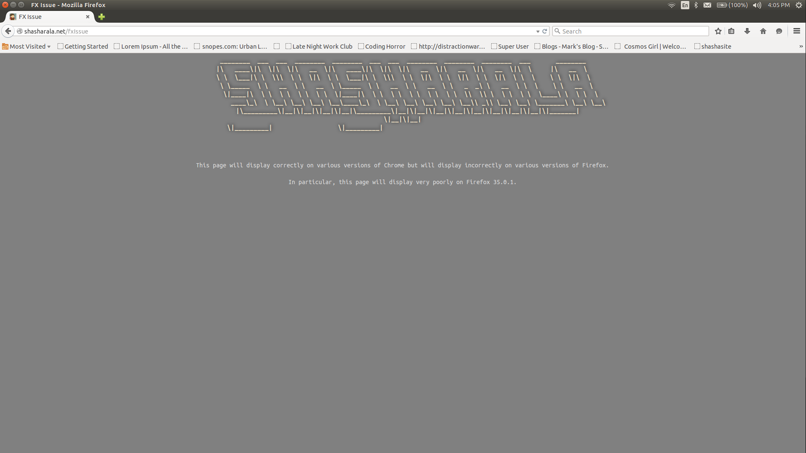

________ ___ ___ ________ ________ ___ ___ ________ ________ ________ ___ ________
|\ ____\|\ \|\ \|\ __ \|\ ____\|\ \|\ \|\ __ \|\ __ \|\ __ \|\ \ |\ __ \
\ \ \___|\ \ \\\ \ \ \|\ \ \ \___|\ \ \\\ \ \ \|\ \ \ \|\ \ \ \|\ \ \ \ \ \ \|\ \
\ \_____ \ \ __ \ \ __ \ \_____ \ \ __ \ \ __ \ \ _ _\ \ __ \ \ \ \ \ __ \
\|____|\ \ \ \ \ \ \ \ \ \|____|\ \ \ \ \ \ \ \ \ \ \ \\ \\ \ \ \ \ \ \____\ \ \ \ \
____\_\ \ \__\ \__\ \__\ \__\____\_\ \ \__\ \__\ \__\ \__\ \__\\ _\\ \__\ \__\ \_______\ \__\ \__\
|\_________\|__|\|__|\|__|\|__|\_________\|__|\|__|\|__|\|__|\|__|\|__|\|__|\|__|\|_______|\|__|\|__|
\|_________| \|_________|
This page will display correctly on various versions of Chrome but will display incorrectly on various versions of Firefox.
In particular, this page will display very poorly on Firefox 35.0.1.
For the examples provided, please note:
The .banner element is displaying font-family as Ubuntu Mono in Firefox's Inspector.
Firefox's preferences are set to "allow pages to choose their own fonts."
The page zoom is set to 100%.
Examples
Firefox

Chrome